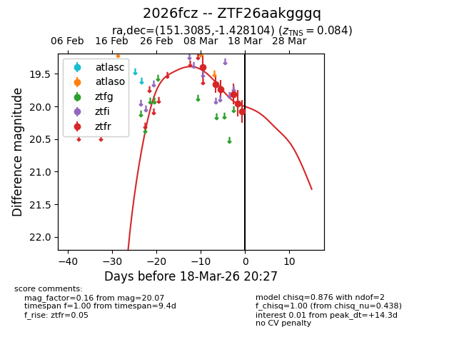
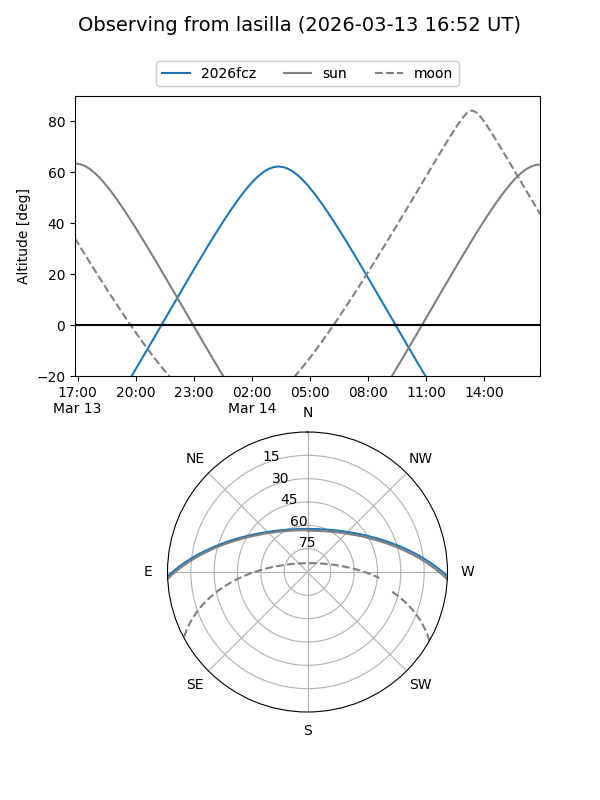
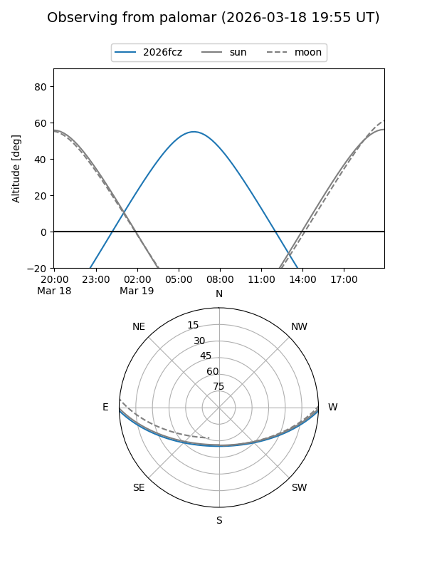
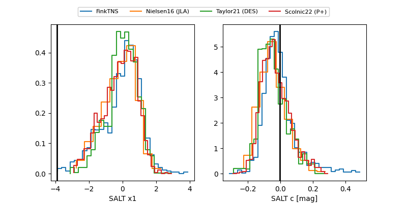

2026fcz
Target 2026fcz at 2026-03-18 20:29
Aliases and brokers:
FINK: link
Lasair: link
ALeRCE: link
TNS: link
YSE: link
alt names
ZTF26aakgggq (ztf,fink_ztf)
2026fcz (tns,yse)
Coordinates:
equatorial (ra, dec) = 151.3085,-1.42810
equatorial (HMS+DMS) = 10:05:14.03,-01:25:41.17
galactic (l, b) = (241.6513,+40.87911)
Flags:
confirmed ia
Photometry:
last ztfr=20.07
6 ztfr detections
Lightcurve

Visibility


Additional plots
